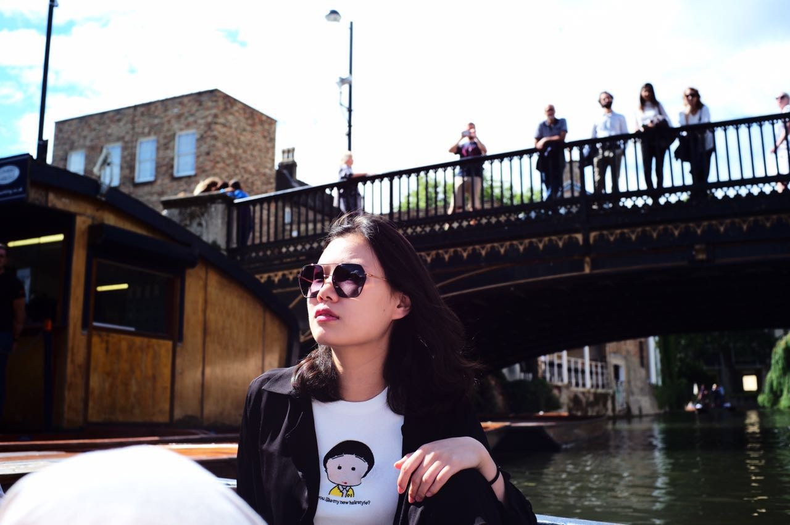
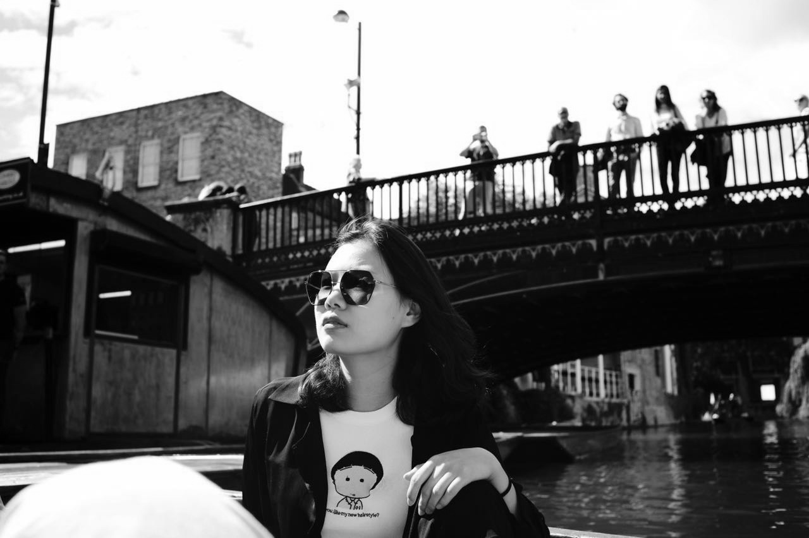
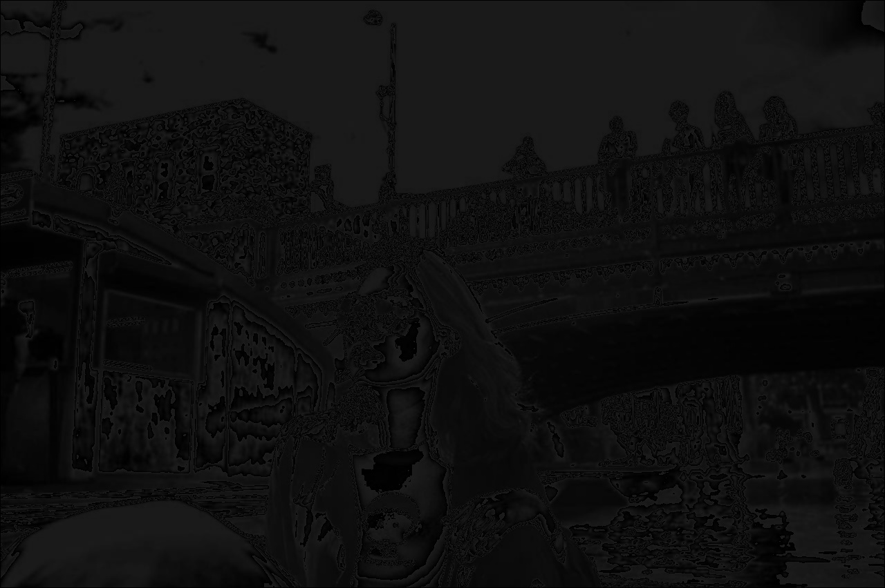

In this assignment, we are asked to input an image of ourselve and manipulate it in two ways. I first create a grayscale image of myself by weighing the RGB of the original image using the formula from class: 0.3*R + 0.6*G + 0.1*B. Then I blur the grayscale image by assigning each pixel the average value of itself and its 8 neighbors. Since the image gets blurred right after the first attempt, there is no need to blur it multiple times.


